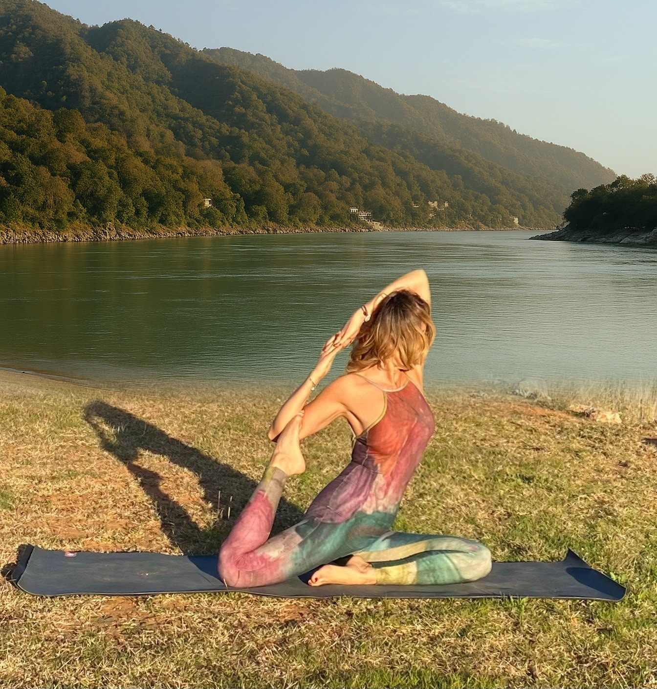

Cuerpo
Movilidad · Fuerza · Flexibilidad · Consciencia corporal

Métodos para conseguir la mejor versión de ti.
Te cuenta en medio minuto qué es Ingeniería Interior y qué puedes hacer aquí.
Pregúntale con tu voz. Te contesta con la suya.
Toca y pregúntale lo que quieras.
Los tres círculos son sus tres pilares — cuerpo, respiración y mente — y se mueven con el sonido real de tu voz mientras hablas, y con la suya cuando contesta. Si prefieres escribir, tienes el asistente justo debajo.
Un método personalizado para ayudarte a:
Trabajaremos con Hatha Yoga, Vinyasa, Pranayama y prácticas de consciencia, creando una hoja de ruta para llevar el bienestar más allá de la esterilla.
Movilidad · Fuerza · Flexibilidad · Consciencia corporal
Oxigenación · Circulación · Energía celular
Favoreciendo la calma, desarrollar mayor presencia y claridad mental.
Meditación vipassaná · Consciencia · Gestión del estrés y las emociones
Observar. Comprender. Transformar.
La meditación nos enseña a observar lo que sucede en nuestro cuerpo y en nuestra mente sin reaccionar automáticamente.
A través de la práctica meditativa y la consciencia, cultivamos presencia, atención y autoconocimiento.
Una herramienta para aprender a relacionarnos de otra manera con nuestros pensamientos, emociones y experiencias.
Más consciencia. Menos automatismos.
La respiración es un puente entre el cuerpo y la mente. A través de la respiración consciente y el Pranayama, podemos favorecer la regulación del sistema nervioso, cultivar la calma, desarrollar mayor presencia y claridad mental.
Una respiración consciente puede contribuir a una mejor relación entre la oxigenación, circulación y energía celular, favoreciendo la armonía.
Cuando cambia tu respiración, cambia tu estado.
Yoga adaptado para ti, evolucionando contigo y a tu ritmo.
Sesiones diseñadas para tus objetivos, necesidades y momento vital, combinando la práctica de yoga, la meditación y el trabajo corporal.
Un acompañamiento personalizado para que integres lo aprendido en tu día a día y lo hagas parte de tu vida.
Pregunta lo que necesites sobre tu práctica.
Responde con pasajes de libros comprobados uno a uno y con el método de Verónica. Lo que no tenga, lo consulta con ella. Si hay dolor, lesión o embarazo, te manda a hablar con ella: esto no sustituye una clase ni es consejo médico.
Cuando cambia tu respiración, cambia tu estado.
Esta página no sabe nada de ti. Lo único que puedes darle desde aquí es tu respiración, así que eso es lo que mide: mantén pulsado mientras inhalas y suelta mientras exhalas, tres veces. No te va a corregir.
Mantén pulsado mientras inhalas.
Las 67 asanas del Hatha Yoga, por grupos.
Toca cualquiera para preguntar por ella.
De la séptima a la duodécima se deshace el camino: son las mismas posturas en espejo.
Haz una foto y mira los ángulos.
Elige la postura, haz la foto y el móvil mide los ángulos reales de tus articulaciones y los compara con los de referencia. La foto no sale de tu teléfono: se mide aquí mismo y no se guarda en ningún sitio.
Para acompañar la práctica.
Si no se ve el reproductor, ábrelo en Spotify.
No hace falta descargar nada de ninguna tienda: apunta con la cámara del móvil a este código y añádela a la pantalla de inicio. Se abre como una app y funciona también sin cobertura.
En Safari: toca Compartir y luego Añadir a pantalla de inicio.
En Chrome: menú de los tres puntos y Añadir a pantalla de inicio.
Déjala en marcadores: funciona igual en cualquier navegador, sin instalar nada.
«El yoga se vive de forma diferente en cada persona. Por eso, tu práctica también debería ser única.»
¿Comenzamos tu camino?
Verónica Martínez